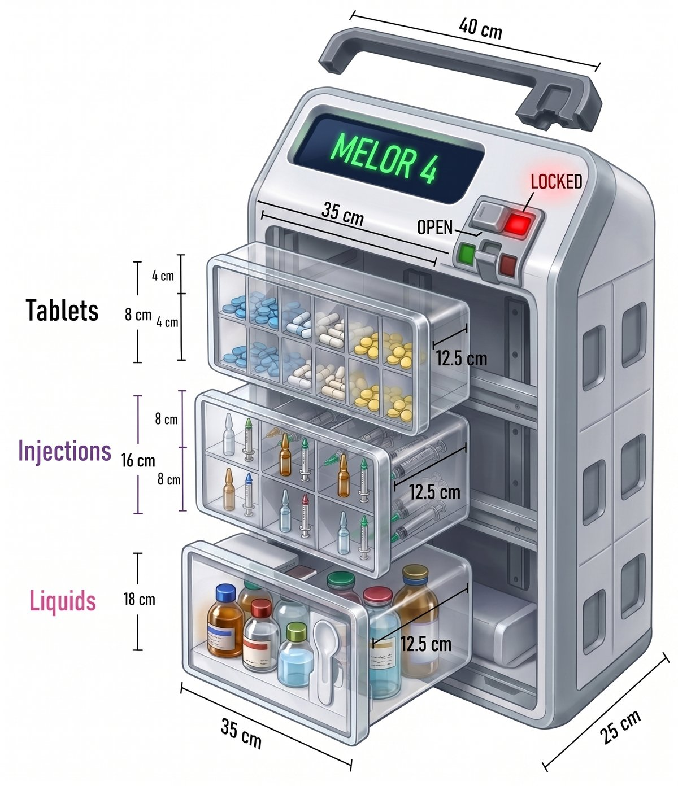
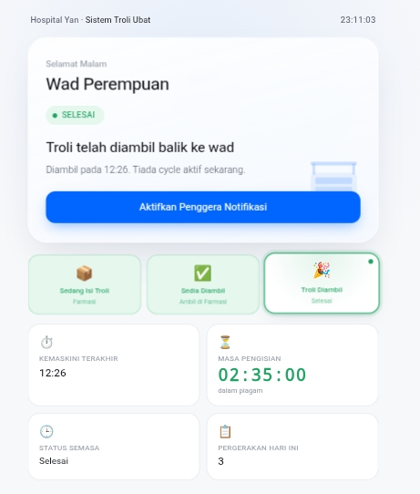
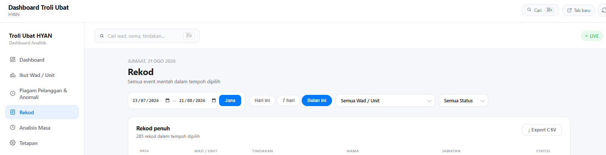

Systematic trolley
Three separated medication zones designed around how floor stock is handled.
Fast Logistics & Alert Medication · YAN Network
What happens when a medication trolley stops being just a trolley — and becomes part of a connected system?

01 / 03Before FLAMYNGo, the workflow depended heavily on physical checking, manual status updates and uncertainty around where the trolley was in its journey.
Not just the container. Not just the software. FLAMYNGo connects both — physical organisation and digital visibility — into one workflow.
Three separated medication zones designed around how floor stock is handled.
One QR-driven workflow connects ward and pharmacy status updates.
One trolley. Three zones.
A systematic floor-stock trolley turns medication storage into a visible physical workflow.
The QR becomes the bridge between the physical trolley and the digital workflow: Ward → Pharmacy → Ward.

02 / 03The system turns individual scans into an operational timeline — making status, timestamps and movement visible across the workflow.

03 / 03FLAMYNGo is designed to make the movement of floor-stock medication easier to see, easier to follow and easier to improve.
ROI should follow the evidence — not the other way around. The framework below is ready for actual fabrication, implementation and time-saving figures.
The concept can be separated into reusable physical and digital patterns, allowing the workflow to expand without rebuilding the idea from zero.
FLAMYNGo MAX — an experimental direction for the innovation showcase.
Return to showcase ↗